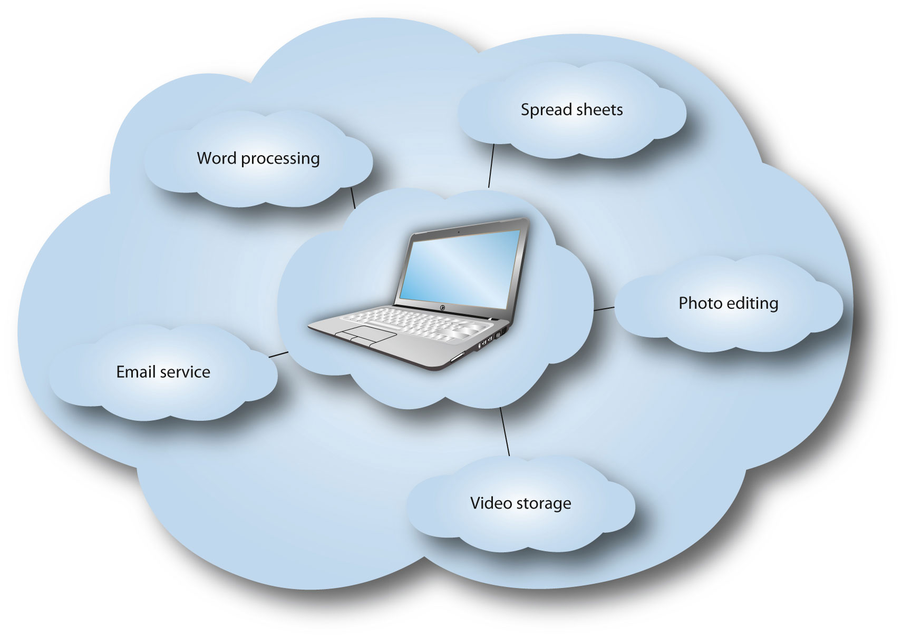

By 1994, the promise of the “information superhighwayThe idea that the Internet will make the transfer of information very fast. Also, related to how Eisenhower’s national highway system led to more people buying cars, the information superhighway would lead to more people buying computers.” had become so potent that it was given its own summit on the University of California Los Angeles campus. The country was quickly realizing that the spread of the web could be harnessed for educational purposes; more than just the diversion of computer hobbyists, this new vision of the web would be a constant learning resource that anyone could use.
The American video artist pioneer Nam June Paik takes credit for the term information superhighway, which he used during a study for the Rockefeller Foundation in 1974, long before the existence of Usenet. In 2001, he said, “If you create a highway, then people are going to invent cars. That’s dialectics. If you create electronic highways, something has to happen.”“Video and the Information Superhighway: An Artist’s Perspective,” The Biz Media, May 3, 2010, http://blog.thebizmedia.com/video-and-the-information-superhighway/. Paik’s prediction proved to be startlingly prescient.
Al Gore’s use of the term in the House of Representatives (and later as vice president) had a slightly different meaning and context. To Gore, the promise of the Interstate Highway System during the Eisenhower era was that the government would work to allow communication across natural barriers, and that citizens could then utilize these channels to conduct business and communicate with one another. Gore saw the government as playing an essential role in maintaining the pathways of electronic communication. Allowing business interests to get involved would compromise what he saw as a necessarily neutral purpose; a freeway doesn’t judge or demand tolls—it is a public service—and neither should the Internet. During his 2000 presidential campaign, Gore was wrongly ridiculed for supposedly saying that he “invented the Internet,” but in reality his work in the House of Representatives played a crucial part in developing the infrastructure required for Internet access.
Figure 11.10
Although Al Gore did not invent the Internet, he did popularize the term information superhighway in an effort to build support for Internet infrastructure and neutrality.
However, a certain amount of money was necessary to get connected to the web. In this respect, AOL was like the Model T of the Internet—it put access to the information superhighway within reach of the average person. But despite the affordability of AOL and the services that succeeded it, certain demographics continued to go without access to the Internet, a problem known as the “digital divide,” which you will learn more about in this section.
From speed of transportation, to credibility of information (don’t trust the stranger at the roadside diner), to security of information (keep the car doors locked), to net neutrality (toll-free roads), to the possibility of piracy, the metaphor of the information superhighway has proved to be remarkably apt. All of these issues have played out in different ways, both positive and negative, and they continue to develop to this day.
In December 2002, a survey by the Pew Internet & American Life Project found that 84 percent of Americans believed that they could find information on health care, government, news, or shopping on the Internet.Anick Jesdanun, “High Expectations for the Internet,” December 30, 2002, http://www.crn.com/it-channel/18822182;jsessionid=3Z2ILJNFKM1FZQE1GHPCKH4ATMY32JVN. This belief in a decade-old system of interconnected web pages would in itself be remarkable, but taking into account that 37 percent of respondents were not even connected to the Internet, it becomes even more fantastic. In other words, of the percentage of Americans without Internet connections, 64 percent still believed that it could be a source of information about these crucial topics. In addition, of those who expect to find such information, at least 70 percent of them succeed; news and shopping were the most successful topics, government was the least. This survey shows that most Americans believed that the Internet was indeed an effective source of information. Again, the role of the Internet in education was heralded as a new future, and technology was seen to level the playing field for all students.
Nowhere was this more apparent than in the Bush administration’s 2004 report, “Toward a New Golden Age in Education: How the Internet, the Law, and Today’s Students Are Revolutionizing Expectations.” By this time, the term digital divide was already widely used and the goal of “bridging” it took everything from putting computers in classrooms to giving personal computers to some high-need students to use at home.
The report stated that an “explosive growth” in sectors such as e-learning and virtual schools allowed each student “individual online instruction.”U.S. Department of Education, Toward a New Golden Age in American Education: How the Internet, the Law and Today’s Students Are Revolutionizing Expectations, National Education Technology Plan, 2004, http://www2.ed.gov/about/offices/list/os/technology/plan/2004/site/theplan/edlite-intro.html. More than just being able to find information online, people expected the Internet to provide virtually unlimited access to educational opportunities. To make this expectation a reality, one of the main investments that the paper called for was increased broadband Internet accessHigher-speed connections to the Internet that make things like live video, audio, and file sharing possible.. As Nam June Paik predicted, stringing fiber optics around the world would allow for seamless video communication, a development that the Department of Education saw as integral to its vision of educating through technology. The report called for broadband access “24 hours a day, seven days a week, 365 days a year,” saying that it could “help teachers and students realize the full potential of this technology.”U.S. Department of Education, Toward a New Golden Age in American Education: How the Internet, the Law and Today’s Students Are Revolutionizing Expectations, National Education Technology Plan, 2004, http://www2.ed.gov/about/offices/list/os/technology/plan/2004/site/theplan/edlite-intro.html.
One of the founding principles of many public library systems is to allow for free and open access to information. Historically, one of the major roadblocks to achieving this goal has been a simple one: location. Those living in rural areas or those with limited access to transportation simply could not get to a library. But with the spread of the Internet, the hope was that a global library would be created—an essential prospect for rural areas.
One of the most remarkable educational success stories in the Department of Education’s study is that of the Chugach School District in Alaska. In 1994, this district was the lowest performing in the state: over 50 percent staff turnover, the lowest standardized test scores, and only one student in 26 years graduating from college.U.S. Department of Education, Toward a New Golden Age in American Education: How the Internet, the Law and Today’s Students Are Revolutionizing Expectations, National Education Technology Plan, 2004, http://www2.ed.gov/about/offices/list/os/technology/plan/2004/site/theplan/edlite-intro.html. The school board instituted drastic measures, amounting to a complete overhaul of the system. They abolished grade levels, focusing instead on achievement, and by 2001 had increased Internet usage from 5 percent to 93 percent.
The Department of Education study emphasizes these numbers, and with good reason: The standardized test percentile scores rose from the 1920s to the 1970s in a period of 4 years, in both math and language arts. Yet these advances were not exclusive to low-performing rural students. In Florida, the Florida Virtual School system allowed rural school districts to offer advanced-placement coursework. Students excelling in rural areas could now study topics that were previously limited to districts that could fill (and fund) an entire classroom. Just as the Interstate Highway System commercially connected the most remote rural communities to large cities, the Internet has brought rural areas even further into the global world, especially in regard to the sharing of information and knowledge.
As technology has improved, it has become possible to provide software to users as a service that resides entirely online, rather than on a person’s personal computer. Since people can now be connected to the Internet constantly, they can use online programs to do all of their computing. It is no longer absolutely necessary to have, for example, a program like Microsoft Word to compose documents; this can be done through an online service like Google Docs or Zoho Writer.
“Cloud computingRunning a program on a remote server via a web browser. In cloud computing, the computer viewing the program is not actually doing the processing, but is rather just communicating with a remote server to send and receive information; the local computer is essentially only a display.” is the process of outsourcing common computing tasks to a remote server. The actual work is not done by the computer attached to the user’s monitor, but by other (maybe many other) computers in the “cloud.” As a result, the computer itself does not actually need that much processing power; instead of calculating “1 + 1 = 2,” the user’s computer asks the cloud, “What does 1 + 1 equal?” and receives the answer. Meanwhile, the system resources that a computer would normally devote to completing these tasks are freed up to be used for other things. An additional advantage of cloud computing is that data can be stored in the cloud and retrieved from any computer, making a user’s files more conveniently portable and less vulnerable to hardware failures like a hard drive crash. Of course, it can require quite a bit of bandwidthEquivalent to the number of lanes on a highway: the maximum amount of data that can be sent per second. to send these messages back and forth to a remote server in the cloud, and in the absence of a reliable, always-on Internet connection, the usefulness of these services can be somewhat limited.
Figure 11.11
Cloud computing allows a computer to contain very little actual information. Many of the programs used by the now-popular “netbooks” are stored online.
The concept of the cloud takes into account all the applications that are hosted on external machines and viewed on a user’s computer. Google Docs, which provides word processors, spreadsheets, and other tools, and Microsoft’s Hotmail, which provides email access, both constitute aspects of the “cloud.” These services are becoming even more popular with the onset of mobile applications and netbooks, which are small laptops with relatively little processing power and storage space that rely on cloud computing. A netbook does not need the processing power required to run Microsoft Word; as long as it has a web browser, it can run the Google Docs word processor and leave (almost) all of the processing to the cloud. Because of this evolution of the Internet, computers can be built less like stand-alone machines and more like interfaces for interacting with the larger system in the cloud.
One result of cloud computing has been the rise in web applications for mobile devices, such as the iPhone, BlackBerry, and devices that use Google’s Android operating system. 3G networksThird-generation cell phone networks capable of high-speed transfer of both voice and data., which are cell phone networks capable of high-speed data transfer, can augment the computing power of phones just by giving the phones the ability to send data somewhere else to be processed. For example, a Google Maps application does not actually calculate the shortest route between two places (taking into account how highways are quicker than side roads, and numerous other computational difficulties) but rather just asks Google to do the calculation and send over the result. 3G networks have made this possible in large part because the speed of data transfer has now surpassed the speed of cell phones’ calculation abilities. As cellular transmission technology continues to improve with the rollout of the next-generation 4G networksFourth-generation cell phone networks that improve on the connectivity speeds of 3G networks and provide more comprehensive access to multimedia. (the successors to 3G networks), connectivity speeds will further increase and allow for a focus on ever-more-comprehensive provisions for multimedia.
The Internet has undoubtedly been a boon for researchers and writers everywhere. Online services range from up-to-date news and media to vast archives of past writing and scholarship. However, since the Internet is open to any user, anyone with a few dollars can set up a credible-sounding website and begin to disseminate false information.
This is not necessarily a problem with the Internet specifically; any traditional medium can—knowingly or unknowingly—publish unreliable or outright false information. But the explosion of available sources on the Internet has caused a bit of a dilemma for information seekers. The difference is that much of the information on the Internet is not the work of professional authors, but of amateurs who have questionable expertise. On the Internet, anyone can self-publish, so the vetting that usually occurs in a traditional medium—for example, by a magazine’s editorial department—rarely happens online.
That said, if an author who is recognizable from elsewhere writes something online, it may point to more reliable information.Elizabeth E. Kirk, “Evaluating Information Found on the Internet,” Sheridan Libraries, Johns Hopkins University, 1996, http://www.library.jhu.edu/researchhelp/general/evaluating/. In addition, looking for a trusted name on the website could lead to more assurance of reliability. For example, the site krugmanonline.com, the official site of Princeton economist Paul Krugman, does not have any authorial data. Even statements like “Nobel Prize Winner and Op-Ed Columnist for The New York Times” do not actually say anything about the author of the website. Much of the content is aggregated from the web as well. However, the bottom-left corner of the page has the mark “© 2009 W. W. Norton & Company, Inc.” (Krugman’s publisher). Therefore, a visitor might decide to pick and choose which information to trust. The author is clearly concerned with selling Krugman’s books, so the glowing reviews may need to be verified elsewhere; on the other hand, the author biography is probably fairly accurate, since the publishing company has direct access to Krugman, and Krugman himself probably looked it over to make sure it was valid. Taking the authorship of a site into account is a necessary step when judging information; more than just hunting down untrue statements, it can give insight into subtle bias that may arise and point to further research that needs to be done.
One noticeable thing on Paul Krugman’s site is that all of his book reviews are positive. Although these are probably real reviews, they may not be representative of his critical reception at large. Mainstream journalistic sources usually attempt to achieve some sort of balance in their reporting; given reasonable access, they will interview opposing viewpoints and reserve judgment for the editorial page. Corporate sources, like on Krugman’s site, will instead tilt the information toward their product.
Often, the web is viewed as a source of entertainment, even in its informational capacity. Because of this, sites that rely on advertising may choose to publish something more inflammatory that will be linked to and forwarded more for its entertainment value than for its informational qualities.
On the other hand, a website might attempt to present itself as a credible source of information about a particular product or topic, with the end goal of selling something. A website that gives advice on how to protect against bedbugs that includes a direct link to its product may not be the best source of information on the topic. While so much on the web is free, it is worthwhile looking into how websites actually maintain their services. If a website is giving something away for free, the information might be biased, because it must be getting its money from somewhere. The online archive of Consumer Reports requires a subscription to access it. Ostensibly, this subscription revenue allows the service to exist as an impartial judge, serving the users rather than the advertisers.
Occasionally, corporations may set up “credible” fronts to disseminate information. Because sources may look reliable, it is always important to investigate further. Global warming is a contentious topic, and websites about the issue often represent the bias of their owners. For example, the Cato Institute publishes anti-global-warming theory columns in many newspapers, including well-respected ones such as the Washington Times. Patrick Basham, an adjunct scholar at the Cato Institute, published the article “Live Earth’s Inconvenient Truths” in the Washington Times on July 11, 2007. Basham writes, “Using normal scientific standards, there is no proof we are causing the Earth to warm, let alone that such warming will cause an environmental catastrophe.”Patrick Basham, “Live Earth’s Inconvenient Truths,” Cato Institute, July 11, 2007, http://www.cato.org/pub_display.php?pub_id=8497.
However, the website ExxposeExxon.com states that the Cato Institute received $125,000 from the oil giant ExxonMobil, possibly tainting its data with bias.Exxpose Exxon, “Global Warming Deniers and ExxonMobil,” 2006, http://www.exxposeexxon.com/facts/gwdeniers.html. In addition, ExxposeExxon.com is run as a side project of the international environmental nonprofit Greenpeace, which may have its own reasons for producing this particular report. The document available on Greenpeace’s site (a scanned version of Exxon’s printout) states that in 2006, the corporation gave $20,000 to the Cato InstituteGreenpeace, ExxonMobil 2006 Contributions and Community Investments, October 5, 2007, http://research.greenpeaceusa.org/?a=view&d=4381. (the other $105,000 was given over the previous decade).
This back-and-forth highlights the difficulty of finding credible information online, especially when money is at stake. In addition, it shows how conflicting sources may go to great lengths—sorting through a company’s corporate financial reports—in order to expose what they see as falsehoods. What is the upside to all of this required fact-checking and cross-examination? Before the Internet, this probably would have required multiple telephone calls and plenty of time waiting on hold. While the Internet has made false information more widely available, it has also made checking that information incredibly easy.
Nowhere has this cross-examination and cross-listing of sources been more widespread than with Wikipedia. Information free and available to all? That sounds like a dream come true—a dream that Wikipedia founder Jimmy Wales was ready to pursue. Since the site began in 2001, the Wikimedia Foundation (which hosts all of the Wikipedia pages) has become the sixth-most-visited site on the web, barely behind eBay in terms of its unique page views.
Table 11.3 Top 10 Global Web Parent Companies, Home and Work
Rank |
Parent |
Unique Audience (millions) |
Active Reach % |
Time |
|---|---|---|---|---|
1 |
362,006 |
84.29 |
2:27:15 |
|
2 |
Microsoft |
322,352 |
75.06 |
2:53:48 |
3 |
Yahoo! |
238,035 |
55.43 |
1:57:26 |
4 |
218,861 |
50.96 |
6:22:24 |
|
5 |
eBay |
163,325 |
38.03 |
1:42:46 |
6 |
Wikimedia |
154,905 |
36.07 |
0:15:14 |
7 |
AOL LLC |
128,147 |
29.84 |
2:08:32 |
8 |
Amazon |
128,071 |
29.82 |
0:23:24 |
9 |
News Corp. |
125,898 |
29.31 |
0:53:53 |
10 |
InterActiveCorp |
122,029 |
28.41 |
0:10:52 |
Source: The Nielsen Company
Organizations had long been trying to develop factual content for the web but Wikipedia went for something else: verifiabilityThe key to a source that is considered usable on Wikipedia. Verifiable information is credited to a specific author or reliable news organization, and has been previously vetted in some way—“truth” does not enter into the picture.. The guidelines for editing Wikipedia state, “What counts is whether readers can verify that material added to Wikipedia has already been published by a reliable source, not whether editors think it is true.”Wikipedia, s.v. “Wikipedia:Neutral point of view,” http://en.wikipedia.org/wiki/Wikipedia:Neutral_point_of_view. The benchmark for inclusion on Wikipedia includes outside citations for any content “likely to be challenged” and for “all quotations.”
While this may seem like it’s a step ahead of many other sources on the Internet, there is a catch: Anyone can edit Wikipedia. This has a positive and negative side—though anyone can vandalize the site, anyone can also fix it. In addition, calling a particularly contentious page to attention can result in one of the site’s administrators placing a warning at the top of the page stating that the information is not necessarily verified. Other warnings include notices on articles about living persons, which are given special attention, and articles that may violate Wikipedia’s neutrality policy. This neutrality policy is a way to mitigate the extreme views that may be posted on a page with open access, allowing the community to decide what constitutes a “significant” view that should be represented.Wikipedia, s.v. “Wikipedia:Verifiability,” http://en.wikipedia.org/wiki/Wikipedia:Verifiability.
As long as users do not take the facts on Wikipedia at face value and make sure to follow up on the relevant sources linked in the articles they read, the site is an extremely useful reference tool that gives users quick access to a wide range of subjects. However, articles on esoteric subjects can be especially prone to vandalism or poorly researched information. Since every reader is a potential editor, a lack of readers can lead to a poorly edited page because errors, whether deliberate or not, go uncorrected. In short, the lack of authorial credit can lead to problems with judging bias and relevance of information, so the same precautions must be taken with Wikipedia as with any other online source, primarily in checking references. The advantage of Wikipedia is its openness and freedom—if you find a problem, you can either fix it (with your own verifiable sources) or flag it on the message boards. Culturally, there has been a shift from valuing a few reliable sources to valuing a multiplicity of competing sources. However, weighing these sources against one another has become easier than ever before.
As the Internet has grown in scope and the amount of personal information online has proliferated, securing this information has become a major issue. The Internet now houses everything from online banking systems to highly personal email messages, and even though security is constantly improving, this information is not invulnerable.
An example of this vulnerability is the Climategate scandal in late 2009. A collection of private email messages were hacked from a server at the University of East Anglia, where much of the Intergovernmental Panel on Climate Change research takes place. These emails show internal debates among the scientists regarding which pieces of data should be released and which are not relevant (or helpful) to their case.Andrew C. Revkin, “Hacked email Is New Fodder for Climate Dispute,” New York Times, November 20, 2009, http://www.nytimes.com/2009/11/21/science/earth/21climate.html. In these emails, the scientists sometimes talk about colleagues—especially those skeptical of climate change—in a derisive way. Of course, these emails were never meant to become public.
This scandal demonstrates how easy it can be to lose control of private information on the Internet. In previous decades, hard copies of these letters would have to be found, and the theft could probably be traced back to a specific culprit. With the Internet, it is much more difficult to tell who is doing the snooping, especially if it is done on a public network. The same protocols that allow for open access and communication also allow for possible exploitation. Like the Interstate Highway System, the Internet is impartial to its users. In other words: If you’re going to ride, lock your doors.
Another explosive scandal involving email account hacking also occurred in late 2009, when Google’s Gmail service was hacked by IP addresses originating in China. Gmail was one of the primary services used by human rights activists due to its location in the United States and its extra encryption. To understand the magnitude of this, it is important to understand the history of email hacking and the importance of physical server location and local laws.
In 2000, a computer virusA program that spreads itself from computer to computer, often with adverse effects. was unleashed by a student in the Philippines that simply sent a message with the subject line “I Love You.” The email had a file attached, called LOVE-LETTER-FOR-YOU.TXT.vbs. The suffix “.txt” is generally used for text files and was meant, in this case, as a distraction; the file’s real suffix was “.vbs,” which means that the file is a script. When run, this script ran and emailed itself across the user’s entire address book, before sending any available passwords to an email address in the Philippines. One of the key aspects of this case, however, was a matter of simple jurisdiction: the student was not prosecuted, due to the lack of computer crime laws in the Philippines.Kim Zetter, “Nov. 10, 1983: Computer ‘Virus’ Is Born,” Wired, November 10, 2009, http://www.wired.com/thisdayintech/2009/11/1110fred-cohen-first-computer-virus/.
The encryption that Gmail uses resulted in only two of the accounts being successfully hacked, and hackers were only able to see email subject lines and timestamps—no message content was available.Kim Zetter, “Google to Stop Censoring Search Results in China After Hack Attack,” Wired, January 12, 2010, http://www.wired.com/threatlevel/2010/01/google-censorship-china/. Since the chaos that ensued after the “I Love You” virus, email users and service providers have become more vigilant in their defensive techniques. However, the increased reliance on email for daily communication makes it an attractive target for hackers. The development of cloud computing will likely lead to entirely new problems with Internet security; just as a highway brings two communities together, it can also cause these communities to share problems.
Although many people increasingly rely on the Internet for communication and access to information, this reliance has come with a hefty price. Most critically, a simple exploit can cause massive roadblocks to Internet traffic, leading to disruptions in commerce, communication, and, as the military continues to rely on the Internet, national security.
Distributed denial-of-service (DDoS) attacks work like cloud computing, but in reverse. Instead of a single computer going out to retrieve data from many different sources, DDoS is a coordinated effort by many different computers to bring down (or overwhelm) a specific website. Essentially, any web server can only handle a certain amount of information at once. While the largest and most stable web servers can talk to a huge number of computers simultaneously, even these can be overwhelmed.
During a DDoS attack on government servers belonging to both the United States and South Korea in July 2009, many U.S. government sites were rendered unavailable to users in Asia for a short time.Siobhan Gorman and Evan Ramstad, “Cyber Blitz Hits U.S., Korea,” Wall Street Journal, July 9, 2009, http://online.wsj.com/article/SB124701806176209691.html. Although this did not have a major effect on U.S. cyber-security, the ease with which these servers could be exploited was troubling. In this case, the DDoS attacks were perpetuated by an email virus known as MyDoom, which essentially turned users’ computers into server-attacking “zombies.” This exploit—coupling an email scam with a larger attack—is difficult to trace, partly because the culprit is likely not one of the original attackers, but rather the victim of a virus used to turn vulnerable computers into an automated hacker army. Since the attack, President Barack Obama has committed to creating a new post for a head of cyber-security in the government.
Most Internet users in the United States connect through a commercial Internet service provider (ISP). The major players—Comcast, Verizon, Time Warner Cable, AT&T, and others—are portals to the larger Internet, serving as a way for anyone with a cable line or phone line to receive broadband Internet access through a dedicated data line.
Ideally, ISPs treat all content impartially; any two websites will load at the same speed if they have adequate server capabilities. Service providers are not entirely happy with this arrangement. ISPs have proposed a new service model that would allow corporations to pay for a “higher tier” service. For example, this would allow AOL Time Warner to deliver its Hulu service (which Time Warner co-owns with NBC) faster than all other video services, leading to partnerships between Internet content providers and Internet service providers. The service providers also often foot the bill for expanding high-speed Internet access, and they see this new two-tiered service as a way to cash in on some of that investment (and, presumably, to reinvest the funds received).
The main fear—and the reason the FCC introduced net neutralityThe concept that service providers should treat all online content equally, rather than developing a tiered system that allows companies to pay for faster delivery of information. rules—is that such a service would hamper the ability of an Internet startup to grow its business. Defenders of net neutrality contend that small businesses (those without the ability to forge partnerships with the service providers) would be forced onto a “second-tier” Internet service, and their content would naturally suffer, decreasing inventiveness and competition among Internet content providers.
One of the key roadblocks to Internet legislation is the difficulty of describing the Internet and the Internet’s place among communication bills of the past. First of all, it is important to realize that legislation relating to the impartiality of service providers is not unheard-of. Before the 1960s, AT&T was allowed to restrict its customers to using only its own telephones on its networks. In the 1960s, the FCC launched a series of “Computer Inquiries,” stating, in effect, that any customer could use any device on the network, as long as it did not actually harm the network. This led to inventions such as the fax machine, which would not have been possible under AT&T’s previous agreement.
A key point today is that these proto–net neutrality rules protected innovation even when they “threatened to be a substitute for regulated services.”Robert Cannon, “The Legacy of the Federal Communications Commission’s Computer Inquiries,” Federal Communication Law Journal 55, no. 2 (2003): 170. This is directly relevant to a controversy involving Apple’s iPhone that culminated in October 2009 when AT&T agreed to allow VoIP (voice over Internet Protocol) on its 3G data networks. VoIP services, like the program Skype, allow a user to place a telephone call from an Internet data line to a traditional telephone line. In the case of the iPhone, AT&T did not actually block the transmission of data—it just had Apple block the app from its App Store. Since AT&T runs the phone service as well as the data lines, and since many users have plans with unlimited data connections, AT&T could see its phone profits cut drastically if all its users suddenly switched to using Skype to place all their telephone calls.
Senator Ted Stevens, the former head of the committee in charge of regulating the Internet, said on the floor of the Senate that the Internet is “not a big truck … it’s a series of tubes.”Alex Curtis, “Senator Stevens Speaks on Net Neutrality,” Public Knowledge, June 28, 2006, http://www.publicknowledge.org/node/497. According to this metaphor, an email can get “stuck in the tubes” for days behind someone else’s material, leading to poorer service for the customer. In reality, service providers sell data-usage plans that only set a cap on the amount of data that someone can send over the Internet (measured in bits per secondThe most common measure of Internet bandwidth. Bit is a computing term meaning a one or a zero., where a bit is the smallest measurement of data). If a service is rated at 1.5 million bits per second (megabits per second, or 1.5 Mbps), it may only reach this once in a while—no one can “clog the tubes” without paying massive amounts of money for the service. Theoretically, the company will then invest this service fee in building more robust “tubes.”
Net neutrality is difficult to legislate in part because it can be confusing: It relies on understanding how the Internet works and how communications are regulated. Stevens’s metaphor is misleading because it assumes that Internet capacity is not already regulated in some natural way. To use the superhighway analogy, Stevens is suggesting that the highways are congested, and his solution is to allow companies to dedicate express lanes for high-paying customers (it should be noted that the revenue would go to the service providers, even though the government has chipped in quite a bit for information superhighway construction). The danger of this is that it would be very difficult for a small business or personal site to afford express-lane access. Worse yet, the pro–net neutrality organization Save the Internet says that a lack of legislation would allow companies to “discriminate in favor of their own search engines” and “leave the rest of us on a winding dirt road.”Save the Internet, “FAQs,” 2010, http://www.savetheinternet.com/faq. For areas that only have access to one Internet service, this would amount to a lack of access to all the available content.
Content on the Internet competes with content from other media outlets. Unlimited and cheap digital duplication of content removes the concept of scarcity from the economic model of media; it is no longer necessary to buy a physical CD fabricated by a company in order to play music, and digital words on a screen convey the news just as well as words printed on physical newspaper. Media companies have been forced to reinvent themselves as listeners, readers, and watchers have divided into smaller and smaller subcategories.
Traditional media companies have had to evolve to adapt to the changes wrought by the Internet revolution, but these media are far from obsolete in an online world. For example, social media can provide a very inexpensive and reliable model for maintaining a band’s following. A record company (or the band itself) can start a Facebook page, through which it can notify all its fans about new albums and tour dates—or even just remind fans that it still exists. MySpace has been (and still is, to an extent) one of the main musical outlets on the Internet. This free service comes with a small web-based music player that allows people interested in the band to listen to samples of its music. Coupling free samples with social networking allows anyone to discover a band from anywhere in the world, leading to the possibility of varying and eclectic tastes not bound by geography.
Review Questions
Questions for Section 11.1 "The Evolution of the Internet"
Questions for Section 11.2 "Social Media and Web 2.0"
Questions for Section 11.3 "The Effects of the Internet and Globalization on Popular Culture and Interpersonal Communication"
Questions for Section 11.4 "Issues and Trends"
There is a constantly growing market for people who know how to use social media effectively. Often, companies will hire someone specifically to manage their Facebook and Twitter feeds as another aspect of public relations and traditional marketing.
Read the article “5 True Things Social Media Experts Do Online,” written by social media writer Glen Allsopp. You can find it at http://www.techipedia.com/2010/social-media-expert-skills/.
Then, explore the site of Jonathan Fields, located at http://www.jonathanfields.com/blog/. After exploring for a bit, read the “About” section (the link is at the top). These two sites will help you answer the following questions: